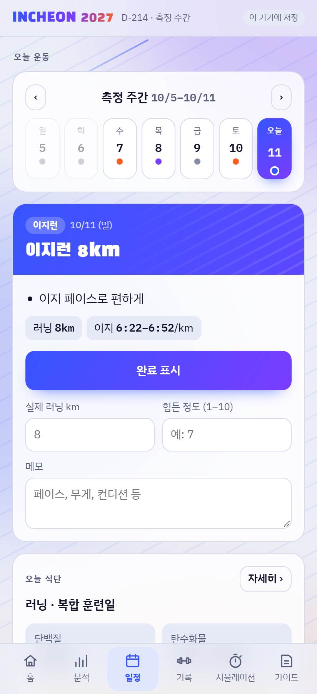
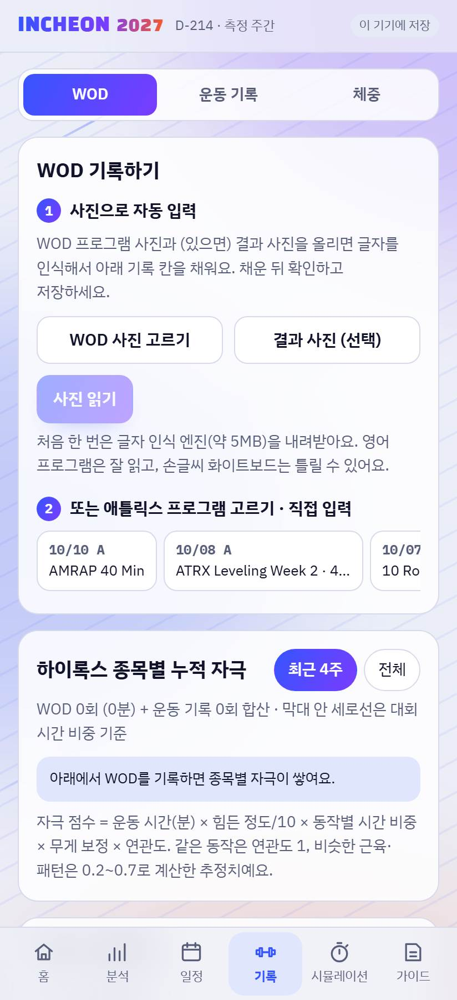
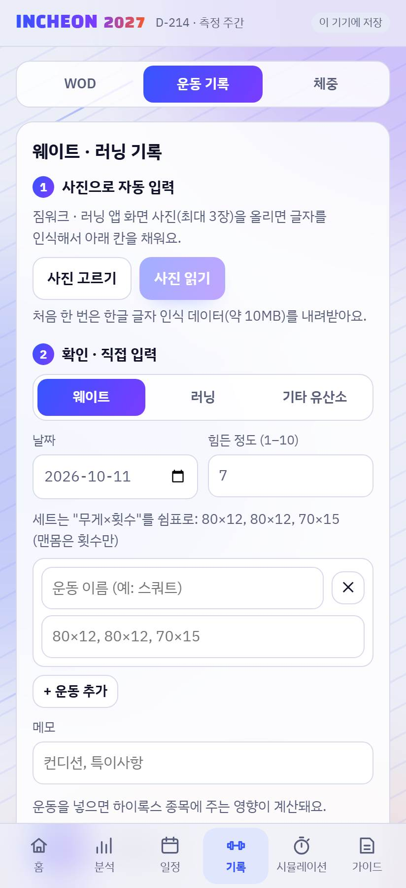
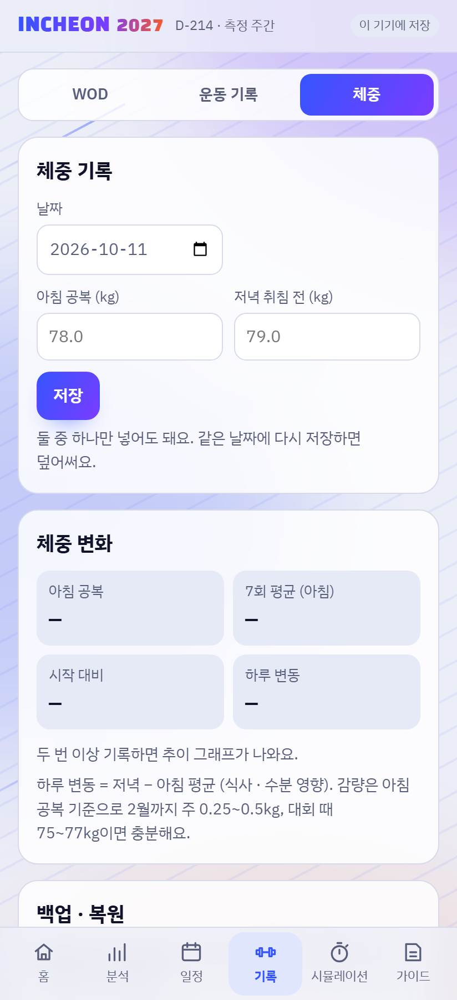

이 앱으로 할 수 있는 것
- 내 디비전 · 나이대에서 목표 순위(상위 몇 %)의 기록과 지금 내 위치 보기
- 목표 기록을 러닝 · 스테이션 8개 · 록스존에 얼마씩 배정해야 하는지 보기
- WOD · 웨이트 · 러닝 기록을 남기고, 하이록스 어느 종목에 도움이 됐는지 보기
- 대회처럼 구간을 나눠 재는 시뮬레이션 타이머, 체중 기록, 식단 기준
기록 데이터 기준: HYROX 인천 2026 (2026.5.15–17) 실제 결과 · Hyranking 집계 (중복 기록 제외). 해마다 참가자 수준이 오르니 목표는 조금 여유 있게 잡는 게 좋아요.
1. 설치하기
앱스토어 없이 링크로 설치해요. 설치하면 홈 화면 아이콘으로 열리고, 주소창 없이 전체 화면으로 보여요.
| 폰 | 방법 |
|---|---|
| 안드로이드 | 크롬으로 k1pale92.github.io/hyrox 열기 → 오른쪽 위 ⋮ → 앱 설치 (또는 '홈 화면에 추가') |
| 아이폰 | 사파리로 같은 주소 열기 → 아래 공유 버튼 → 홈 화면에 추가 |
업데이트 받기: 새 버전이 나오면 앱을 완전히 닫았다가(최근 앱 목록에서 밀기) 다시 열면 돼요. 그래도 그대로면 한 번 더 닫았다 여세요.
2. 처음 시작 — 목표 정하기

- 어떤 경기에 나가세요? 종목(싱글 · 더블스), 디비전(오픈 · 프로 · 어댑티브), 성별, 에이지를 골라요. 더블스 에이지는 두 사람 평균 나이예요.
- 목표 순위: 상위 몇 %에 들고 싶은지 숫자로 넣거나 10 · 25 · 50%를 눌러요. 바로 아래에 목표 기록이 계산돼요.
- 지금 내 기록 (선택): 10km 기록과 체중. 10km가 없으면 '내 예상'은 같은 그룹의 중간 기록으로 시작해요. 체중은 식단 계산에 써요.
- 시작하기를 누르면 끝. 나중에 홈의 목표 바꾸기로 언제든 바꿀 수 있어요.
3. 홈

- 내 목표: 한 줄 요약과 목표 기록. 오른쪽 목표 바꾸기로 조건 변경
- 목표 vs 내 예상: 목표 기록, 내 예상 기록, 내 에이지 · 전체에서 상위 몇 %인지
- 분포 그래프: 파란 막대가 내 에이지, 회색이 전체. 초록 선이 목표, 주황 점선이 나
- 항목별 차이: 러닝 · 스테이션 · 록스존에서 목표까지 줄여야 할 시간 (빨강 = 줄여야 함, 초록 ✓ = 이미 여유)
'내 예상'은 측정 기록이 쌓일수록 정확해져요. 기록 탭 → 운동 기록 → 하이록스 종목 측정에 넣으세요.
4. 분석

- 조건별 기록 분포: 싱글 · 더블스, 디비전, 성별, 에이지를 바꿔 가며 인원과 상위 25% · 중간 기록, 분포 그래프 보기. 막대를 누르면 그 구간 비율과 누적 순위가 나와요.
- 총 시간 · 러닝 · 스테이션 · 록스존: 보고 싶은 상위 % 구간(기본 10% · 50%)을 골라 시간 구성 비교. '구간 추가'로 33% 같은 원하는 %도 넣을 수 있어요.
- 목표 시간 배정: 목표 %를 넣으면 그 기록대 선수들이 실제로 나눈 비율로 구간별 목표를 보여 주고, 내 현재와 비교해 줄일 시간을 알려 줘요. Run 1~8 목표도 나와요.
5. 일정

- 오늘 운동: 날짜 줄에서 날을 고르면 그날 운동이 나와요. 끝나면 완료 표시, 실제로 뛴 km, 힘든 정도(1–10), 메모를 남겨요.
- 이번 주 운동: 러닝(인터벌 · 이지 · 롱런)과 스테이션(근력 · 복합)으로 나눠 계획 · 완료 횟수
- 훈련 계획 · 남은 기간: 대회까지 남은 날과 단계별 러닝 / 스테이션 계획
- 주간 러닝량 차트와 주차별 목록. 날짜를 누르면 위 '오늘 운동'에서 열려요.
훈련 일정은 만든 사람(45–49세 남자, 2027년 5월 인천 대회) 기준으로 짜여 있어요. 무게 · 거리는 내 수준에 맞게 조절해서 참고하세요.
6. 기록 — WOD · 운동 기록 · 체중
기록 탭 위쪽 작은 메뉴로 세 화면을 오가요.

WOD체육관 WOD 기록
- 사진으로 자동 입력: WOD 프로그램 사진(과 결과 사진)을 골라 사진 읽기 → 동작 · 무게 · 거리 · 횟수가 채워져요.
- 또는 프로그램을 붙여 넣기 / 직접 입력
- 심플 입력: 최종 시간이나 라운드만 / 고급 입력: 동작마다 무게 · 거리 · 횟수와 내 시간
- 저장하면 이번 WOD가 하이록스 어느 종목에 얼마나 자극을 줬는지와 대회 분량 대비 %(예: 월볼 180개 = 180%)가 나와요.

운동 기록웨이트 · 러닝 · 측정
- 웨이트 · 러닝 기록: 운동 앱 · 러닝 앱 화면 사진(최대 3장)을 읽거나 직접 입력. 세트는
80×12, 80×12, 70×15 - 하이록스 영향 분석: 어떤 운동이 어느 종목에 기여했는지 (예: 슬레드 푸시 ← 스쿼트), 부족한 종목
- 하이록스 종목 측정: 스키 · 슬레드 · 월볼 등 8종목과 5km · 10km. '기준 거리 시간' 또는 '시간 · 분량 직접'(예: 5분에 1,146m → 1000m 환산)
- 종목을 누르면 날짜별 기록과 추이 그래프가 펼쳐져요.

체중아침 공복 · 저녁 취침 전
- 날짜별로 아침 공복과 저녁 취침 전 체중을 넣어요 (하나만 넣어도 돼요).
- 최근 값, 7회 평균, 시작 대비 변화, 하루 변동(저녁 − 아침)과 두 선 추이 그래프
- 이 화면 아래에 백업 · 복원이 있어요.
7. 시뮬레이션

- 풀: 러닝 8번 + 스테이션 8개. 구간 목표는 내 목표 기록을 실제 배분으로 나눈 값
- 단축: 대회 분량의 몇 %로 할지 입력 (50% = 러닝 500m, 월볼 50개 …)
- 임의: 구간을 골라 켜고, 구간마다 러닝 km · 스테이션 m · 개수를 직접. 목표 시간은 분량에 비례해 자동 계산
- 시작 후 구간이 끝날 때마다 큰 버튼 → 목표 대비 차이와 예상 완주 시간이 바로 나와요. 끝나면 기록에 저장.
타이머가 도는 동안 화면이 꺼지지 않게 해요. 앱을 닫아도 이어서 진행돼요.
8. 가이드

- 페이스 · 스테이션: 목표 구간 기록, 내 10km 기록으로 계산한 러닝 페이스(이지 · 역치 · 인터벌), 스테이션 기술 팁, 점검 지점
- 식단: 그날 운동에 맞춘 단백질 · 탄수화물 · 지방 · 열량 (처음에 넣은 체중 기준), 대회 주 식단
9. 입력 팁
| 무엇 | 이렇게 |
|---|---|
| 시간 | 숫자만 넣어도 돼요: 0510 → 5:10, 4500 → 45:00, 12412 → 1:24:12 |
| 웨이트 세트 | 무게×횟수를 쉼표로: 80×12, 80×12, 70×15 (맨몸은 횟수만 15) |
| 사진 인식 | 설치한 앱에서는 폰에서 직접 글자를 읽어요. 처음 한 번 인식 데이터를 내려받아요(영어 약 5MB, 한글 포함 약 10MB). 영어 프로그램 화면은 잘 읽고, 손글씨는 틀릴 수 있으니 저장 전에 확인하세요. |
| WOD 고르기 동작 | 'Ski or Row'처럼 고르는 동작은 둘 다 잡혀요. 안 한 쪽을 눌러 빼세요. |
10. 데이터 · 백업
- 모든 기록은 내 폰 안에만 저장돼요. 서버로 보내지 않아요.
- 폰을 바꾸거나 앱(또는 브라우저 데이터)을 지우면 기록이 사라져요. 기록 → 체중 → 백업 파일 저장을 가끔 해 두세요.
- 새 폰에서는 처음 화면의 백업 불러오기 또는 기록 → 체중 → 백업 파일 불러오기.
11. 자주 묻는 질문
'내 예상'이 실제보다 너무 빠르거나 느려요
측정 전에는 같은 그룹의 중간 기록으로 추정해요. 10km · 스테이션 측정을 넣을수록 내 기록으로 바뀌어요.
WOD 효과 점수는 정확한가요?
운동 시간 × 힘든 정도 × 동작과 하이록스 종목의 연관도로 계산한 추정치예요. 어느 종목을 많이 / 적게 했는지 비교하는 용도로 보세요.
다른 대회 기록도 볼 수 있나요?
지금은 HYROX 인천 2026 결과만 들어 있어요. 다른 대회는 업데이트에서 추가할 수 있어요.
업데이트했는데 화면이 그대로예요
앱을 완전히 닫았다가 다시 여세요. 처음 열 때 새 파일을 받고 다음 실행부터 적용될 수 있어요.
아이폰에서도 되나요?
사파리 → 공유 → 홈 화면에 추가로 설치해요. 대부분 기능이 같지만, 화면 꺼짐 방지처럼 일부는 iOS 버전에 따라 다를 수 있어요.